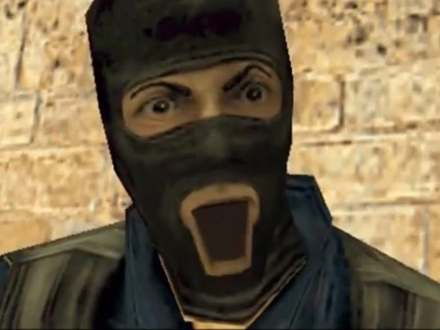
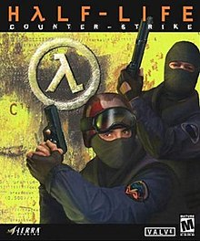

Counter-Strike (CS) is a series of multiplayer tactical first-person shooter video games in which teams of terrorists battle to perpetrate an act of terror (bombing, hostage-taking, assassination) while counter-terrorists try to prevent it (bomb defusal, hostage rescue, escort mission). The series began on Windows in 1999 with the release of the first game, Counter-Strike. It was initially released as a modification ("mod") for Half-Life that was designed by Minh "Gooseman" Le and Jess "Cliffe" Cliffe before the rights to the mod's intellectual property were acquired by Valve, the developers of Half-Life, who then turned Counter-Strike into a retail product released in 2000.
 Counter-Strike is an objective-based, multiplayer tactical first-person shooter. Two opposing teams—the Terrorists and the Counter Terrorists—compete in game modes to complete objectives, such as securing a location to plant or defuse a bomb and rescuing or guarding hostages.At the end of each round, players are rewarded based on their individual performance with in-game currency to spend on more powerful weapons in subsequent rounds. Winning rounds results in more money than losing and completing objectives such as killing enemy players gives cash bonuses.Uncooperative actions, such as killing teammates, results in a penalty.